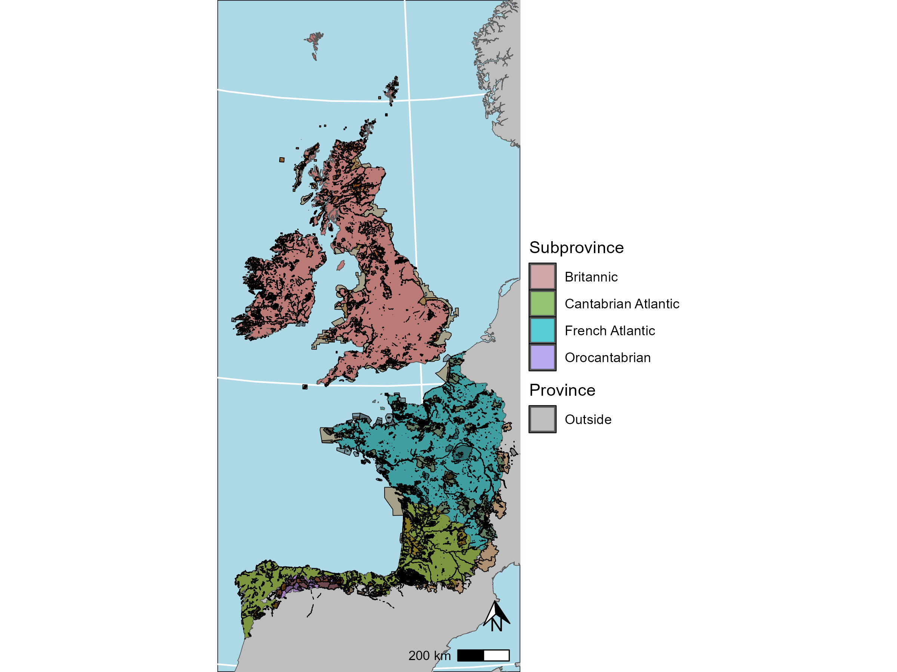

This package allows to explore and select the data from the Celtic Invasive Plants database.

install.packages("devtools")
library(devtools)
devtools::install_github("Cgt93/CelticInvasivePlantsdb")
library(CelticInvasivePlantsdb)
install.packages("remotes")
library(remotes)
remotes::install_github("Cgt93/CelticInvasivePlantsdb")
library(CelticInvasivePlantsdb)| Function | Description | Type |
|---|---|---|
| CIPdb | Automatically downloads the most updated version of the Celtic Invasive Plants database from the EU Open Research Repository (https://zenodo.org/records/18630660) | Loading function |
| Description_CIPdb | Downloads a table describing the content of all the columns forming the Celtic Invasive Plants database | Loading function |
| CIP_Checklist | Downloads the Celtic Invasive Plants checklist | Loading function |
| CIP_NAIS_Ver | Downloads a table detailing the Native & Invasive Alien Species (NAIS) found within within the Celtic Invasive Plants Checklist and the references used to verify their native status by country | Loading function |
| CIP_Grids_details | Downloads a table detailing the mergers and relocations of the UTM grids | Loading function |
| CIP_value_query | Allows to conduct a value query within the Celtic Invasive Plants database either on the whole database or a specific country | Selecting function |
| Select_CIPdb | Selects data from a CIPdb table, excluding the Natural Reserves IDs (WDPA_PID columns) | Selecting function |
| WDPA_PID_select_CIPdb | Selects entries of the Celtic Invasive Plants database based on a WDPA PID query | Selecting function |
| ICat_select_CIPdb | Selects entries of the Celtic Invasive Plants database based on a IUCN category query | Selecting function |
| General_Report_CIPdb | Generates an automatic general report of the Celtic Invasive Plants database or a selection of this of the unique values of the categorical columns | Report function |
| Area_Report_CIPdb | Generates an automatic report of the taxa occurring in an administrative, protected or biogeographic area of the Celtic Invasive Plants database or a selection of this of unique values of the categorical columns | Report function |
| Taxa_Report_CIPdb | Generates an automatic Taxa report of the Celtic Invasive Plants database or a selection of this based on the unique values of the categorical columns, given a value of the columns “Species_with_Author”, “Taxa”, “Taxa_ID” or “Genus” | Report function |
| Taxa_Rich_CIPdb | Estimates the taxa richness given a taxonomic scope and an area scope | Richness, Distribution and Occupation function |
| Taxa_Occup_CIPdb | Estimates the percentage of taxa occupation given a taxonomic scope and an area scope | Richness, Distribution and Occupation function |
| UTM_Rich_map | Generates Taxa Richness maps (.png and .svg) with a 10x10 km UTM grid resolution | Mapping function |
| Admin_Rich_Occup_map | Generates Taxa Richness and Occupation maps (.png and .svg) with different administrative resolutions | Mapping function |
| Tax_Distribution_map | Generates Taxa Distribution maps (.png and .svg) with a 10x10 km UTM grid resolution | Mapping function |
| Tax_Distribution_Admin_map | Generates Taxa Distribution maps (.png and .svg) with different administrative resolutions | Mapping function |